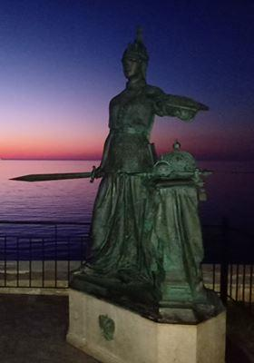

La Crimée, au cœur des enjeux géopolitiques et de la civilisation européenne, hier et aujourd’hui
par Pierre Emmanuel THOMANN
Le 15 octobre dernier, un forum international sur les conséquences de la guerre de Crimée en 1853-1856 a été organisé à Sébastopol (Le monde 165 ans après la guerre de Crimée 1853-1856). Il s'agit du premier évènement de ce type depuis le rattachement de la Crimée à la Russie en 2014.
Les intervenants, historiens, géopolitologues et experts en relations internationales en provenance de Russie mais aussi de France, Turquie et Suisse se sont penchés sur l'héritage laissé par la Guerre de Crimée au XIXème siècle et les enseignements que l'on peut tirer aujourd'hui dans le contexte de crise entre l'Union européenne (UE) et la Russie. En effet, la Crimée est à nouveau aujourd'hui au centre d'une controverse géopolitique.
Un régime de sanctions est appliqué depuis 2014 par l'Union européenne contre la Russie et la Crimée en particulier, et constitue un obstacle pour une coopération fructueuse entre la Russie et les États-membres de l'UE. Il est pourtant nécessaire de surmonter ce différent pour éviter une dégradation de la sécurité en Europe, et enfin identifier les intérêts communs qui sont nombreux entre la Russie et les autres nations européennes.
Une résolution a été adoptée par les participants et souligne « L'augmentation significative de la présence de l'OTAN et de ses satellites près de la Crimée après 2014 a abouti à une dégradation des relations avec la Russie, accompagnée de provocations en mer, des sabotages pour couper l'alimentation en eau et en électricité de la péninsule, de la propagande antirusse dans les pays occidentaux, au-delà de toute limite ». « Ces actions ont provoqué en réaction la mise en œuvre d'actions vigoureuses, à la fois humanitaires et internationales et juridiques ».
Les participants au forum ont présenté un certain nombre d'initiatives visant avant tout à attirer l'attention de la communauté internationale sur la situation réelle sur le territoire de la Crimée. À cette fin, «il est recommandé de continuer à organiser des conférences internationales scientifiques et pratiques en Crimée, de mener des actions en faveur de la paix, notamment par des échanges culturels, scientifiques et entre étudiants, des expositions communes, des festivals de musique et autres, des manifestations sportives et sportives, des compétitions avec la participation de scientifiques de renom russes et étrangers, et des personnalités de la culture et de l'art, du sport », indique la résolution. Une cérémonie au monument dédié aux soldats russes et français tombés à la bataille de Malakoff (1855) a aussi eu lieu en présence de jeunes russes de Sébastopol, qui bâtiront demain l'Europe continentale, grâce à la préservation de la mémoire historique.
Les enjeux géopolitiques soulevés par la Crimée et soulignés par le forum sont à mettre en relation avec l'évolution de la situation politique en Europe et les inflexions récentes de politique étrangère notamment en France. Le président Français Emmanuel Macron a récemment aussi insisté sur la question problématique de la finalité de l'OTAN, et son intervention renforce indirectement la pertinence des questions soulevées lors de ce forum à Sébastopol.
Le président français, dans un entretien au magazine The Economist a souligné que « L’OTAN a été pensé comme ayant un ennemi : le Pacte de Varsovie. En 90 nous n’avons pas du tout réévalué ce projet géopolitique à l’aune de la disparition de l’ennemi initial. L’impensé c’est que l’ennemi reste toujours la Russie. C’est d’ailleurs aussi vrai que quand on intervient en Syrie contre le terrorisme, ce n’est pas l’OTAN qui intervient. On utilise les mécanismes d’interopérabilité de l’OTAN mais c’est une coalition ad hoc. Donc la question de la finalité actuelle de l’OTAN est une vraie question à se poser. Il a aussi souligné qu'il est nécessaire de "rouvrir un dialogue stratégique, sans naïveté aucune et qui prendra du temps, avec la Russie. Parce que ça montre bien que vous devez réinternaliser votre politique de voisinage, vous ne pouvez pas la laisser gérer par des tiers qui n’ont pas les mêmes intérêts que vous. Donc pour moi c’est un point important, c’est un sujet prioritaire, géopolitique et militaire ».1
Il faut espérer que le débat initié par ces déclarations ne se limitera pas à une politique de communication et aboutira à terme à des décision concrètes, notamment la levée des sanctions et un rapprochement substantiel entre la France et la Russie mais aussi entre l'UE et la Russie. Les réactions des partenaires de la France à l'Union européenne et l'OTAN notamment de la part de l'Allemagne ont montré qu'un scénario favorable a un rapprochement substantiel était encore bloqué s'il fallait attendre l'évolution de l'UE et l'OTAN, qui ne correspondent pourtant plus dans leur forme actuelle aux intérêts géopolitiques de la France. Il faudra attendre une présidence française qui ait le courage de revenir de manière concrète aux fondamentaux du Gaullisme, c'est à dire la souveraineté nationale, et ne pas poser comme préalable comme le fait aujourd’hui le gouvernement français, une illusoire autonomie stratégique européenne, et l'unité de l'UE sur ces questions.
En attendant, la situation actuelle est dommageable pour tout le monde. Le refus de l'Union européenne d'accorder des visas aux citoyens habitant en Crimée et qui possèdent un passeport russe délivré après 2014, constitue une discrimination entre les citoyens résidant en Crimée et les autres habitants résidant en Russie. Les citoyens de Crimée sont obligés de demander un passeport ukrainien et de faire une demande de visa en Ukraine. Certains possèdent encore des passeports ukrainiens, mais pas tout le monde. Quelles sont les conséquences ? Les échanges entre étudiants et professeurs avec les établissements d'enseignements supérieurs de Crimée mais aussi les voyages d'études des écoles et les voyages d'affaires dans la zone Schengen sont rendus difficiles.
S'y ajoutent les sanctions qui empêchent aux entrepreneurs de l'UE d'investir en Crimée ou des citoyens de Crimée de faire des affaires avec l'UE, d'exporter des produits. Les bateaux de croisière ne peuvent pas non plus accoster dans les ports de Crimée, et les agences de voyage des membres de l'UE ne peuvent pas opérer en Crimée, faisant drastiquement baisser le nombre de visiteurs. Les habitants de Crimée ne sont portant pas responsable la situation géopolitique internationale ? Ces sanctions constituent donc des discriminations multiples à leur égard.
L'État Russe toutefois investit beaucoup en Crimée, notamment à Sébastopol qui se développe mais aussi dans les infrastructures, notamment de transports (un nouvel aéroport a été construit à Simféropol ; le nouveau pont de Crimée qui traverse la péninsule de Kertch, le plus long d'Europe et de Russie (18 km) a été inauguré en 2018 et il sera traversé par le chemin de fer fin 2019 ; un réseau d'autoroutes est en construction).
La nécessité d'une nouvelle architecture européenne de sécurité a plus long terme a aussi été soulignée pendant la conférence, comme cadre nécessaire pour résoudre les contentieux géopolitiques entre l'UE et la Russie, notamment la question de la Crimée, qui fait l'objet de sanctions spécifiques.
En attendant, selon le scénario le plus probable d'évolution de la crise, puisque la levée des sanctions est très incertaine dans un avenir proche, c'est la créativité et le contournement des sanctions pour les rendre de plus en plus inutiles qui serait la voie la plus accessible.
Lorsque les gouvernements se rendront compte que ces sanctions sont non seulement inutiles politiquement, mais de moins en moins applicables sur le terrain, et même contre-productives, la levée des sanctions pourra être envisagée.
La question de la reconnaissance de la Crimée comme partie intégrante de la Russie est une question encore plus difficile, mais relève de la volonté politique afin de ne pas en faire un obstacle à la coopération. Le cas de la Turquie et la non reconnaissance par l'UE de la République turque de Chypre du Nord, qui est de facto sous contrôle militaire de la Turquie, démontre que cela ne constitue pas un obstacle, ni pour une union douanière entre l'UE et la Turquie, ni pour des financements à la Turquie (crise migratoire), ni des négociations d'adhésion.
Toutefois, il faut souligner que ce rapprochement ne pourra se réaliser que sur le principe d'une égalité et d'un équilibre géopolitique entre la Russie et les États membres de l'UE, et non pas sur le principe d'une extension de la vision normative de l'UE. L'UE dont les principes normatifs et idéologiques ne sont plus adaptés à la nouvelle configuration géopolitique européenne et mondiale devrait aussi faire l'objet d'une profonde réforme. Si cela s'avère impossible, les relations bilatérales avec la Russie devraient constituer le moteur du rapprochement. La doctrine du multilatéralisme, mise en avant pas l'UE, ne peut pas être développée sans une multipolarité préalable.
Les sanctions contre la Russie et la Crimée en particulier sont un échec, car la situation n'a pas évolué. L'UE et la Russie sont dans une situation de blocage au détriment des deux protagonistes.
La Crimée fait désormais partie de la Russie et cela constitue une réalité définitive et incontournable, non seulement du point de vue historique mais du réalisme géopolitique aussi.
Du point de vue historique, la Crimée est liée au monde russe depuis le moyen-âge puisque Vladimir 1er de la Russie de Kiev s'est converti à l'orthodoxie à Chersonèse (aujourd'hui dans la grand Sébastopol). Après l'intermède historique de l'invasion tatare, la Crimée été intégrée à l'empire russe par Catherine II en 1783 et le port de Sébastopol a été fondé la même année.
Du point de vue géopolitique, la Crimée est un territoire hautement stratégique en mer Noire, et fait office de pivot entre la Russie, l'Ukraine, les Balkans, le Caucase, la Turquie et le Proche et Moyen-Orient. Le port de Sébastopol donne à la Russie une ouverture vers la Méditerranée et les océans Atlantique et Indien (par le canal de Suez).
La Crimée au XIXème siècle était déjà au cœur des ambitions rivales des empires russe, ottoman, français et britannique.
Le coup d'État de Louis-Napoléon Bonaparte (Napoléon III), le 2 décembre 1851, et le rétablissement de l'empire français avait éveillé à nouveau les craintes du tsar russe Nicolas I. La Russie se considérait en effet comme la garante de l'ordre européen depuis la constitution de la Sainte Alliance contre Napoléon et l'empire français. Elle tentait aussi d'endiguer les idées de la révolution française qui risquaient de contaminer les monarchies russes, autrichienne et prussienne.
Du point de vue de la France et de l'Angleterre, ce sont les visées expansionnistes de la Russie vis à vis des détroits turcs (Les Dardanelles et le Bosphore) et de Constantinople mais aussi dans les Balkans, qui menaçaient de détruire l'équilibre politique européen. La France et l'Angleterre soupçonnaient la Russie de poursuivre de manière implicite "le projet grec" (ou Byzantin) de Catherine II. Ce projet géopolitique consistait à rétablir une sorte de nouvel empire Byzantin avec pour capitale Constantinople et sous influence russe.
Lors de la guerre de Crimée de 1853-56, la France et l'Angleterre ont donc cherché à réduire l'influence russe en mer Noire et Méditerranée et soutenu l'empire ottoman qui était en rivalité contre la Russie. La France sous Napoléon III avait déjà commencé la colonisation en Algérie dès 1830, et cherchait à reprendre une place prépondérante en Europe qu'elle avait perdu après la chute de Napoléon 1er. L'Angleterre voulait sécuriser la route des Indes.
Le traité de Paris en 1856 a mis fin à la guerre de Crimée. Il a proclamé l'intégrité de l'empire Ottoman, déclaré la neutralité de la mer Noire, interdit à la Russie la navigation aux navires de guerre ainsi que la construction de fortifications. Il a marqué un coup d'arrêt à l'expansion russe dans la région.
Les contrecoups géopolitiques de cette guerre bouleverseront plus tard à nouveau les équilibres européens.
À plus long terme, cette politique a entrainé des conséquences géopolitiques dommageables pour la France notamment, avec l'évolution du système international sur le principe des nationalités promues par Napoléon III qui a abouti à l'unification italienne et allemande.
Lors de la guerre franco-prussienne, la France s'est retrouvée isolée, après un gain de puissance temporaire. En 1871, la Russie a tiré profit de la défaite française lors la guerre franco-prussienne de 1870 pour réviser les clauses sur la démilitarisation de la mer Noire.
Face à la prépondérance géopolitique allemande, la France a cherché à constituer par la suite une alliance de revers franco-russe, à la veille de la Première Guerre mondiale.
La leçon principale de l'histoire qui est ressortie de ce forum international, est que les finalités européennes ne sont pas concevables sans la Russie, ni dans le passé ni dans l'avenir.
Aujourd'hui la volonté de certains pays de l'OTAN d'affaiblir la Russie est dommageable pour la sécurité de l'Europe et présente de nombreux parallèles avec la situation au XIXème siècle. De nombreux intérêts géopolitiques sont pourtant aujourd'hui identiques entre la Russie et les pays membres de l'Union européenne. Il s'agit notamment de la stabilisation de l'arc de crise au sud de l'Eurasie qui va du Nord de l'Afrique, Sahel compris à l'Afghanistan, qui menace toute l'Eurasie, Russie et pays européens de l'Ouest compris, avec les États faillis et la menace terroriste islamiste.
Vladimir Poutine a participé à la cérémonie de dévoilement du monument au tsar pacificateur Alexandre III. Le monument a été érigé dans le parc du palais Livadia, en Crimée.
Du point de vue juridique, en réalité, la réunification de la Crimée à la Russie relève du droit de peuples à disposer d'eux-mêmes, principe qui n'a pas été respecté par les États qui ne reconnaissent pas la référendum et l'appartenance de la Crimée à la Russie selon le professeur Alfred Zayas2. Le différent juridique résulte d'une interprétation unilatérale du droit international par les États membres de l'OTAN et UE.
La Crimée (26 945 km²) est un territoire qui fait environ trois fois la Corse (8722 km²), avec plus 2 millions 300 000 habitants. La côte en Crimée a une longueur d'environ 2500 km, la côte méditerranéenne en France qui fait 2435 km (avec 1385 km entre Espagne et Italie et 1050 km en Corse).
De plus la Crimée est en raison de sa taille et sa position géographique, un territoire au potentiel extraordinaire avec sa position stratégique mais aussi son patrimoine historique, culturel, naturel et culinaire (notamment les produits issus de la pêche et la vigne).
La Crimée est un site important pour la civilisation européenne dont la Russie constitue son pilier oriental. Les sites archéologiques (scythes, grecs antiques à Chersonèse, romains, byzantins, génois, arméniens, tatars, turcs), mais aussi l'architecture, les parcs paysagers, le patrimoine naturel, la gastronomie, la culture du vin, en attestent largement.
Une reprise des investissements européens en Crimée mais aussi les flux touristiques représenteraient non seulement des opportunités commerciales tant pour les citoyens de Crimée que pour les investisseurs des pays de l'UE. Les nouvelles infrastructures de transports construites par l'État russe depuis 2014 offrent un climat d'investissement plus favorable. Les échanges entre universités, instituts de recherche et les écoles seraient aussi très bénéfiques pour les jeunes générations et les scientifiques.
Les domaines de coopération potentiels sont très nombreux. On peut mentionner l'analyse et la recherche en géopolitique et en relations internationales dans la zone Mer Noire (interface - Russie-Crimée, Balkans, Turquie, Caucase, Moyen Orient...) mais aussi dans les sciences marines, l'environnement, l'intelligence artificielle, l'archéologie, l'agronomie viticole, la pêche...
Une autre problématique est celle des cimetières et des monuments dédiés aux soldats (Français Anglais, Ottomans...), tombés de la guerre de Crimée en 1853-56, Ces monument ne font plus l'objets de suivi par la France depuis les sanctions depuis 2014. Pour la compréhension des relations franco-russes et de l'histoire européenne, c'est un enjeu de mémoire très important pour les générations futures qui aspirent à une Europe pacifiée.
Les rapprochements multiples entre les sociétés civiles sont de nature à rapprocher les points de vue, la compréhension mutuelle et l'enrichissement culturel. Cette démarche mettrait un frein à la fracture entre la Russie et le reste de l'Europe et favoriserait en fin de compte la paix et la stabilité en Europe et la coopération.
Une coopération en matière de sécurité et de défense est aussi envisageable à plus long terme. Une synergie entre les marines françaises et russes, avec les ports de Toulon et Sébastopol dans la Grande méditerranée (selon l'historien Fernand Braudel, la Mer noire est une extension de la Méditerranée et doit se penser comme, telle), est un potentiel inexploité. L'idée d'une coopération militaire franco-russe contre l'État islamique avait été suggéré après les attentats terroristes du Bataclan (13 novembre 2015) à Paris, qui ont suivi le crash dans la péninsule du Sinaï, en territoire égyptien le 31 octobre 2015, du vol 9268 de la compagnie russe Metrojet, à destination de Saint-Pétersbourg, attentats tous deux revendiqués par L'État islamique de Syrie. Mais cela n'a jamais abouti.
Surmonter les différents géopolitiques en Europe entre la Russie et les États membres de l'UE, en particulier au sujet de la Crimée, est une étape essentielle pour promouvoir l'Europe de l'Atlantique au Pacifique, anticipée par le Général de Gaulle. C'est en effet seulement à cette échelle que l'Europe organisée sur des principes géopolitiques communs atteindra une masse critique dans le monde multicentré.
Partager cette page